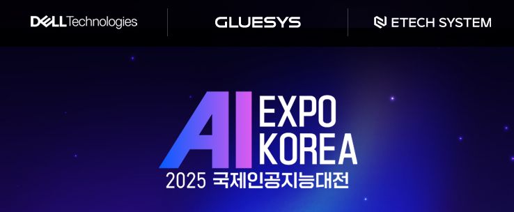
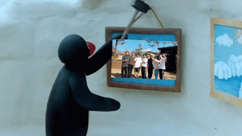

< AI EXPO KOREA 2025 국제인공지능대전 >
AI EXPO KOREA 2025 국제인공지능대전은 지난 7년간 축적된 노하우와 경험을 바탕으로
최첨단 AI 기술 및 솔루션 / 다양한 산업별 AI 적용 사례
/ 세미나 및 포럼 / 비즈니스 네트워킹 행사를 선보이는 전시회이다.
📌전시회는 서울 COEX 1층 Hall A에서 2025년 5월 14일(수) ~ 16일(금)까지 3일간 진행되며,
📌개최규모는 322개사 550부스이고, (사)한국인공지능협회, ㈜서울메쎄, 인공지능신문에서 주최 및 주관한다.
아래는 해당 링크 및 온라인 사전등록 링크이다.🧾
📍AI EXPO KOREA 2025 국제인공지능대전 링크📍
📍온라인 사전등록 링크📍

< 참여 계기 >
내가 AI EXPO KOREA 2025 국제인공지능대전에 참여하게 된 계기는
컴공 공지 단톡방에 올라온 글 때문이었다.👩💻
4월 30일 공지방에 인공지능대전 갈 사람은 선착순으로 모집한다는 톡이 올라왔고,📱
🏃♂️➡️나랑 친구들은 바로 학과 사무실로 달려갔다.
지도교수상담도 1회 인정해주시고,
요즘 AI 붐이니까 어떤 멋진 기술들을 전시해뒀을지도 궁금했고,
나중에 좋은 경험이 될 것 같아 신청했다.😋
나는 5월 16일 금요일에 전시회를 보러 간다.
